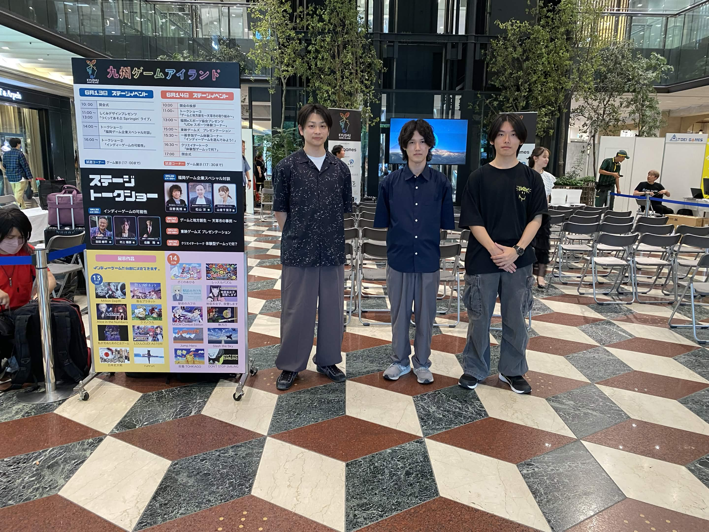

Wishlist 3,000+
SNS総再生数 1,000,000+
ゲームイベントへの出展実績あり
ジャンル：3Dアクションゲーム
開発環境：Unreal Engine 5 / C++
制作期間：2026年2月 ～ 現在
制作形態：チーム制作
ジャンル：3D避けゲーム
開発環境：DirectX 12 / C++
制作期間：2025年12月 ～ 2026年1月
制作形態：個人制作
ジャンル：シミュレーションサバイバル
開発環境：Unreal Engine 5 / C++
制作期間：2026年1月 ～ 2026年2月
制作形態：個人制作
ジャンル：ホラーゲーム
開発環境：Unreal Engine 5
制作期間：2025年11月
制作形態：個人制作
Steam公開予定
